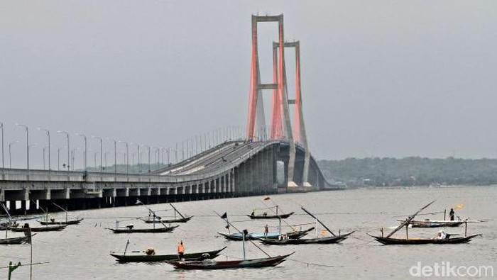

WELLCOME TO WEBSITE!
= = Kembali ke Beranda = =
Senin, 20 Februari 2023

SURAMADU
Jembatan Suramadu atau yang memiliki nama resmi Jalan Tol Surabaya- Madura
adalah sebuah jembatan sekaligus jalan tol yang melintasi Selat Madura, menghubungkan
Pulau Jawa (di Surabaya) dan Pulau Madura(di Bangkalan, tepatnya timur Kamal).
Dengan Panjang 5.438 m jembatan suramadu merupakan jembatan terpanjang di indonesia
untuk saat ini.
Jembatan Suramadu terdiri dari tiga bagian yaitu jalan layang, jembatan penghubung,
dan jembatan utama . Pembangunan jembatan ini ditujukan untuk mempercepat pembangunan di Pulau Madura,
meliputi bidang infrastruktur dan ekonomi di Madura yang relatif tertinggal dibandingkan kawasan lain di
Provinsi Jawa Timur. Perkiraan biaya pembangunan jembatan ini adalah 4,5 triliun rupiah ..
| Jembatan ini memiliki kecantikan yang dapat Anda nikmati saat melintas di Jembatan
Suramadu, yaitu Anda akan dibuat tercengang dan terkagum-kagum karena saat berada di tengah jembatan,
Anda bisa melihat adanya laut yang indah dan juga apabila Anda datang pada saat yang tepat seperti
sunset/sunrise akan sangat lebih bagus lagi pemandangannya. |
Fakta-fakta menarik tentang jembatan suramadu
- Jembatan Suramadu adalah jembatan terpanjang ketiga se-Asia Tenggara versi Guinness World Records.
- Jembatan ini juga dinobatkan sebagai jembatan terpanjang di Indonesia.
- Diperkirakan kuat hingga 100 tahun.
sekian, Terimakasih :)